Cast our minds back to the original questions:
- ✓ How big and bright are the stars?
- ✓ What are they made of?
- ✓ What are their most important characteristics?
- ? Why and how do they form?
- ? What is their energy source?
- ? What happens when it runs out?
To make progress with the last three questions we will need to develop better models of the physics going on inside a star. This is difficult as we do not have direct access to the interior, but we can use physical models to find out!
5.1 Stellar lifetime and energy sources
We have seen from the HR diagram (Figure 2.4) that most stars lie on the main sequence, but that there are giants and dwarfs. We account for this by proposing that stars spend most of their lives on the main sequence and less time in the other states.
How old is the Sun?
We know from radioisotope dating that the Solar System has existed for about 4.6 billion years.
- Life on Earth has existed for about 4 billion years, indicating the presence of liquid water (and therefore a hot Sun).
- Radioactive dating techniques on Moon rocks estimated that this is about 4 billion years old, therefore the Sun must be older!
What powers the Sun?
5.1.1 Solar energy source
We know the mass of the Sun \(M_\odot \approx 2\times 10^{30}\,\mathrm{kg}\).
We know it radiates with luminosity \(L_\odot \approx 4\times 10^{26}\,\mathrm{W}\).
The age of the solar system is at least \(\tau_\odot \approx 4.6\times 10^{9}\,\mathrm{years} \approx 1.5\times 10^{17}\,\mathrm{s}\).
We can work out how much energy is required to keep the Sun shining \(E\approx \tau_\odot L_\odot\).
We can define the efficiency of the Sun’s energy source in Joules / kg (how much energy one kg of the Sun’s mass produces):
\[ \epsilon_\odot = \frac{E}{M_\odot} \ge \frac{\tau_\odot L_\odot}{M_\odot}\implies \epsilon_\odot \ge 3\times 10^{13}\,\mathrm{J\,kg^{-1}}. \tag{5.1}\]
We need to find a source for all this energy.
5.1.2 Chemical energy?
Chemical reactions involve rearrangements of electrons in atoms and molecules.
- We have seen the natural units for these processes are electron-volts: \(1.6\times 10^{-19}\) J
- Compare this to the mass per atom \(\approx m_p = 1.7\times 10^{-27}\) kg.
Therefore the efficiency of chemical reactions is \[ \epsilon_C \approx \frac{1.6\times10^{-19}}{1.7\times 10^{-27}} \approx 1\times 10^8 \mathrm{J/kg}. \tag{5.2}\]
Comparing this to Equation 5.1, you can see that \(\epsilon_C\approx \epsilon_\odot/10^5\).
If chemical reactions were the source of the Sun’s power, this would last only \[ \tau_C \approx \frac{M_\odot \epsilon_C}{L_\odot} = 15\,000\,\mathrm{years}\approx \tau_\odot/10^5. \tag{5.3}\]
This is >100000 times too short! - The Sun is not powered by chemical reactions.
5.1.3 Gravitational Energy?
Gravitational potential energy for a proton coming from \(\infty\) to a radius \(R\)
\[ E_G=\frac{GMm_p}{R} \tag{5.4}\]
So the efficiency is \[ \epsilon_G \approx \frac{E_G}{m_p}=\frac{GM}{R} \approx 10^{11}\,\mathrm{J/kg}. \tag{5.5}\]
This is greater than the chemical energy efficiency found in Equation 5.2.
Estimate lifetime the same way: \[ \tau_G=\frac{M_\odot \epsilon_G}{L_\odot} \approx 1.6\times10^{7}\mathrm{years}\approx \tau_\odot/100. \tag{5.6}\]
This is about 100 times too small - the Sun is not powered by ongoing gravitational collapse. However, this is a large amount of energy, we will see later how important it is.
5.1.3.1 Introduction to the Kelvin-Helmoltz timescale
Kelvin performed this calculation himself. The timescale of Equation 5.6 is called the Kelvin-Helmholtz Timescale. It determines how quickly a star radiates the energy accumulated by gravitational collapse before nuclear fusion sets in. We will discuss this later in this chapter.
On the Age of the Sun’s Heat
By Sir William Thomson (Lord Kelvin) Macmillan’s Magazine, vol. 5 (March 5, 1862), pp. 388-393
“As for the future, we may say, with equal certainty, that inhabitants of the earth can not continue to enjoy the light and heat essential to their life for many million years longer unless sources now unknown to us are prepared in the great storehouse of creation.”
Sensibly he hedged his bets in the final sentence!
Kelvin did not know about the theory of relativity, \(E=mc^2\) and atomic nucleii. Let us look to these for the power we need.
5.1.4 Relativistic energy
Einstein discovered the relationship between mass and energy, the famous \(E=mc^2\) for a mass at rest.
For the total conversion of mass to energy we have an energy efficiency \[ \epsilon_R = \frac{mc^2}{m} = c^2 = 9\times 10^{16}\,\mathrm{J/kg}. \tag{5.7}\]
If total conversion was the energy source, we would have \[ \tau_R = \frac{M_\odot c^2}{L_\odot} = 3\times 10^{13}\,\mathrm{years} \approx 10^4\tau_\odot \tag{5.8}\]
This would be long enough to keep the Sun bright!
However, this complete conversion requires an equal amount of matter and antimatter.
- We do not see the signature gamma rays from matter annihilation
- If half the Sun were anti-matter what would prevent explosive annihilation?
The Sun is not powered by matter annihilation.
5.1.5 Nuclear Fusion
We need a way to turn mass into energy in a controlled way.
Under conditions of very high temperature and very high density, several light nuclei can fuse to form a single nucleus
The newly formed nucleus has a slightly lower mass than the combination of the separate nuclei
This mass deficit \(\Delta m\) is released as fusion energy \(\Delta E = \Delta m c^2\).
In the Sun, four Hydrogen nucleii (protons) fuse together to form a Helium-4 nucleus (alpha particle).
Energy is released in the form of radiation (gamma-rays) and neutrinos.
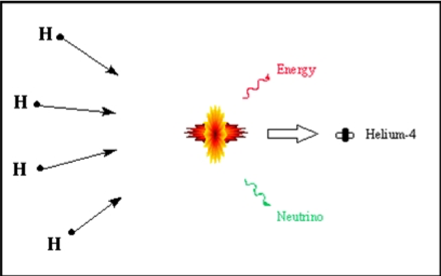
5.1.5.1 Energy budget
To calculate \(\Delta E = \Delta m c^2\) we need the mass of a Helium nucleus \(m_\alpha\) and the mass of the proton \(m_p\).
- \(m_p = 1.673\times 10^{-27}\,\mathrm{kg}\)
- \(4 m_p = 6.690\times 10^{-27}\,\mathrm{kg}\)
- \(m_\alpha = 6.644\times 10^{-27}\,\mathrm{kg}\)
So \(\Delta m = 4m_p - m_\alpha = 0.046 \times 10^{-27}\,\)kg.
And \(\Delta E = \Delta m c^2 = 4.127 \times 10^{-12}\,\)J. This is the energy available in one H-He fusion reaction.
So \[ \epsilon_\mathrm{Fusion} =\frac{\Delta E}{m_p} = 2.47\times 10^{15}\,\mathrm{J\,kg^{-1}} \tag{5.9}\] and the lifetime would be \[ \tau_\mathrm{Fusion} = \frac{M_\odot \epsilon_\mathrm{Fusion}}{L_\odot} = 4\times 10^{11}\,\mathrm{years} \tag{5.10}\]
This is around 100 times the age of the Sun. Is this plausible? - Yes, if we do not assume that all of the Sun’s mass undergoes fusion.
5.2 Stellar Formation
We have verified the general picture of stars as fusion-powered for most of their lifetimes. But let’s back-track and look again at that energy from gravitational collapse, because we had asked the question: Why and how do stars form?
We know that stars have a finite lifetime, so they must have been born at some point in the past. For the Sun this was about 4.6 billion years ago. Gravity is the key player.
What did it form from? Interstellar gas cloud.
The galaxy is full of Hydrogen and Helium produced in the big bang, and dust and gas left over from previous generations of stars (Population II).
If it is not completely uniform then gravity will cause clumps to collapse.
As it collapses, the gas heats up (gravitational potential energy is converted to thermal energy).
Let’s compare some densities.
| Object | Number density (particles / \(m^3\)) |
|---|---|
| Earth’s atmosphere | \(2.5\times 10^{25}\) |
| Laboratory vacuum | \(1\times 10^{16}\) |
| ‘Dense’ Interstellar cloud | \(1\times 10^{14}\) |
| ‘Average’ Interstellar Cloud | \(1\times 10^{13}\) |
The density in interstellar clouds is very low, so we need a lot of mass (\(>100 M_\odot\)) to collapse under gravity.
If the cloud is initially rotating even slightly, the rotation speed increases as material collapses inward
Spinning material flattens into a protoplanetary disc
The dense central part forms a protostar
Surrounding material continues to accrete onto the protostar
The temperature rises, and the gas becomes ionised
Eventually, if enough material is accreted, the temperature becomes high enough to initiate nuclear fusion - a star is born!
Radiation from the hot star pushes material out until equilibrium is reached.
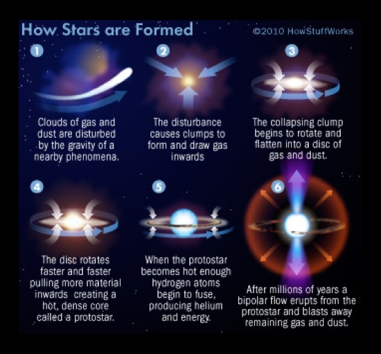
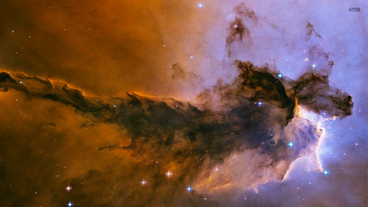
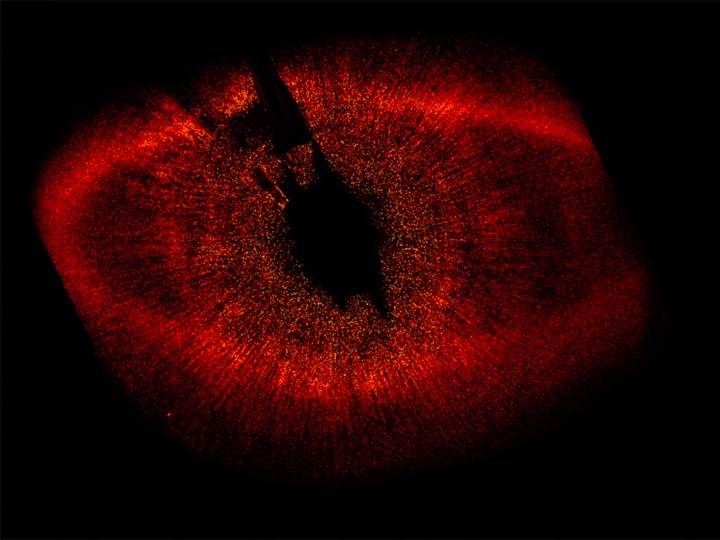
5.2.1 Protostars
Let’s model this cloud collapse in a bit more detail.
From the previous simulation we see that initial non-uniformities are amplified by gravity. The cloud fragments as it collapses and each fragment produces a proto-star.
The temperature of the proto-star increases as gravitational potential energy is converted to heat.
Initially, the temperature of the interstellar cloud is 10s of Kelvin.
The interstellar medium (ISM) is made mainly of Hydrogen in the ground state, therefore it cannot produce emission lines
Dust in the interstellar medium re-emits radiation absorbed approximately as blackbody emission in the far-infrared
\[ \lambda_{peak} = 0.0029 / T_\mathrm{eff} \approx 10^{-4}\,\mathrm{m} \tag{5.11}\]
Radiation in the far-infrared is too long-wavelength to trigger absorption transitions and generate absorption lines (photons in the UV would be required)
The cloud is very diffuse
Radiation prevents the temperature from increasing very rapidly
Remember Stefan-Boltzmann Law \[ L = 4\pi R^2 \sigma T^4\]
At first \(T\) is low, but \(R\) is very large (hundreds of a.u.).
- As the cloud collapses, the temperature rises slowly to begin with
- But luminosity is decreasing as \(R\) gets smaller
- The temperature eventually begins to rise in the core of the cloud
5.2.1.1 Gravitational Collapse - Energy budget
How much energy will be liberated from the gravitational field when the gas cloud collapses?
- What is the total gravitational self-energy of a sphere of mass M and radius R? (i.e. how much energy would it take to unbind the cloud?)
We can get a rough estimate by making a crude approximation:
- Two half-spheres, each mass \(M/2\) come together
- Their approximate centres are a distance \(R\) apart.
The gravitational potential energy of the two half-spheres is
\[ E_G = -\frac{G\left(\frac{M}{2}\right)\left(\frac{M}{2}\right)}{R} = -\frac{GM^2}{R}\times\frac{1}{4}. \tag{5.12}\]
This is a rough estimate, but in the ‘Stellar Structure and Evolution’ course you will see that with a more precise derivation you will need to know how the density changes at different radii.
If we assume a uniform density, we get \[ \begin{aligned} E_G = -\frac{GM^2}{R}\times\frac{3}{5}. \end{aligned} \tag{5.13}\]
So we can remember that in a realistic situation the result will be \(\approx\frac{GM^2}{R}\) times a small factor.
The energy released from the gravitational field as the cloud collapses will be \(E_{lib}=E_{init} - E_{final}\). If the cloud starts out very large we can assume \(E_{init}\simeq 0\), so the energy available is \[ E_{lib}=E_G\approx \frac{GM^2}{R}. \tag{5.14}\]
What is the timescale associated to the energy liberated from the gravitational collapse (converted to heat)?
5.2.1.2 Kelvin-Helmholtz timescale
The timescale associated to the liberation of the energy obtained from the gravitational collapse can be derived using Equation 5.14 and dividing this by the luminosity \(L\) of the star: \[ \tau_{KH} = \frac{E_G}{L} \approx \frac{GM^2}{R L}. \tag{5.15}\]
This is the Kelvin-Helmoltz timescale (or thermal timescale) already encountered earlier in this chapter (Equation 5.6), and it is the lifetime of a star if it were powered by heat left over from its contraction.
We saw that for the Sun this is about \(10^7\) years: this is roughly the time it takes a \(1 M_\odot\) protostar to collapse.
- This time is quite short by astronomical standards, and this is the reason we do not see many protostars.
For a \(1M_\odot\) protostar, after about 10000 years, it will have
- \(T=2000-3000 K\)
- \(R\approx 20R_\odot\)
- \(L\approx 100 L_\odot\).
For a \(0.08 M_\odot\) star, the pressure and temperature are never high enough to trigger nuclear fusion.
- It will still shine for its Kelvin-Helmholtz timescale though - a brown dwarf
- Planets also have residual heat left over from their formation. Jupiter gives off twice as much heat as it receives from the Sun!
5.2.2 Pre-main-sequence stars
5.2.2.1 Hayashi Tracks
Before reaching the main sequence, protostars will follow ‘tracks’ in the HR diagram based on changes of their properties such as temperature and luminosity.
- T-Tauri variable stars (see Chapter 3) are examples of unstable protostars evolving toward stability.
- After ending its contraction, a protostar becomes a T-Tauri and it is very luminous
- This evolutionary path for the protostar moves it around on the HR diagram
- For low-mass stars (\(<3M_\odot\)) this is mostly vertical motion downward until the proto-star hits the main sequence
- This almost vertical motion is the Hayashi track: the star’s temperature does not change much but the luminosity drops quickly (e.g. lines 1 and 2 in Figure 5.5)
- During this phase the protostar is unstable - remember T-Tauri variables!
5.2.2.2 Henyey Tracks
For stars with mass \(<3M_\odot\), after the Hayashi track (nearly vertical line in the HR diagram, and drop of luminosity), there is an increase in luminosity (e.g. line 3 in Figure 5.5). This is due to the temperature starting to rise in the star, which increases the luminosity (remember the Stefan-Boltzmann equation).
Higher mass stars have another phase:
- As the star continues to heat up, the gas in the cloud becomes fully ionised.
- No un-ionised atoms to provide atomic absorption lines - the gas becomes transparent in its diffuse outer regions
- The protostar slowly contracts until the onset of nuclear reactions in the core
- This slow contraction with an increase in temperature produces a nearly horizontal track on the HR diagram - slight luminosity increase with large temperature increase.
The horizontal lines in the HR diagram for more massive stars, as well as the lines where the luminosity increases for low-mass stars, are the Henyey tracks (e.g. lines 3,5,9 in Figure 5.5).
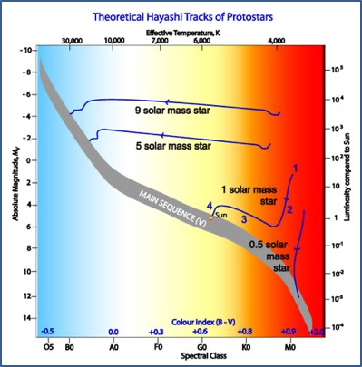
All the pre-main-sequence stars have distinctive characteristics :
- unstable luminosity
- eject lots of gas
- surrounded by warm clouds (from which they formed)
- T Tauri stars are a good example of pre-MS stars.
Young stars also exhibit ‘bipolar outflows’:
- these are jets of material in opposite directions extending over a distance scale of about 1 lightyear
- the jets indicate that the new star is gaining material from a surrounding accretion disk
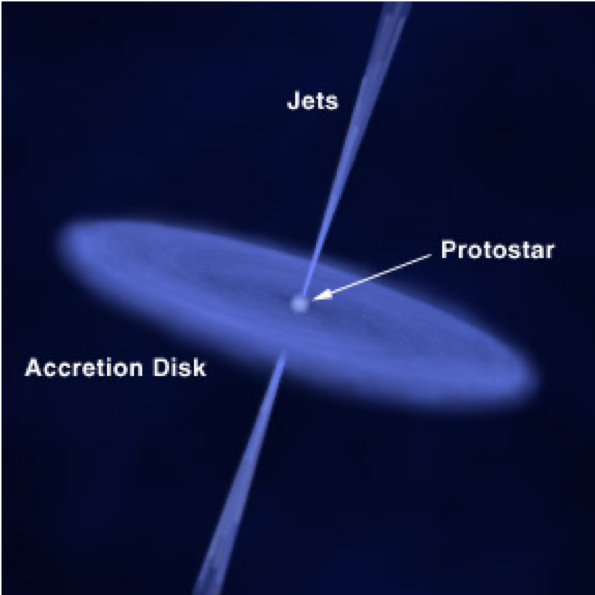
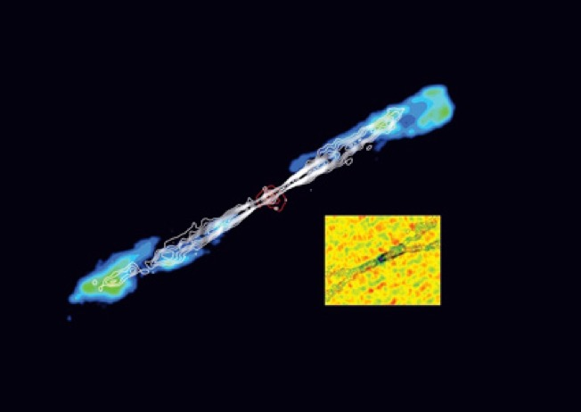
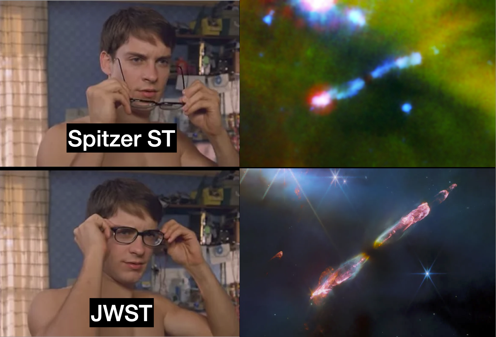
5.2.2.3 Emission Nebulae
- Hot young stars (\(T\geq 20000\)K) are also often surrounded by emission nebulae, known as HII regions
- Such hot stars emit UV light that has enough energy to ionise the Hydrogen in the surrounding cloud of ISM
- HII regions at equilibrium: recombination must happen at the same rate as ionisation
- Recombination produces Hɑ and other emissions as well, generating an overall red glow.
The reason why Hɑ lines are produced is that, during the recombination, the electrons do not go straight to the ground state, but cascade down from higher states.
- The Orion, Eagle, Trifid and Lagoon nebulae (Figure 5.9 - Figure 5.12) are all (beautiful) examples of emission nebulae
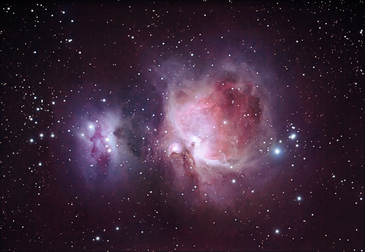
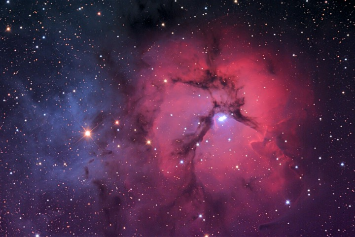
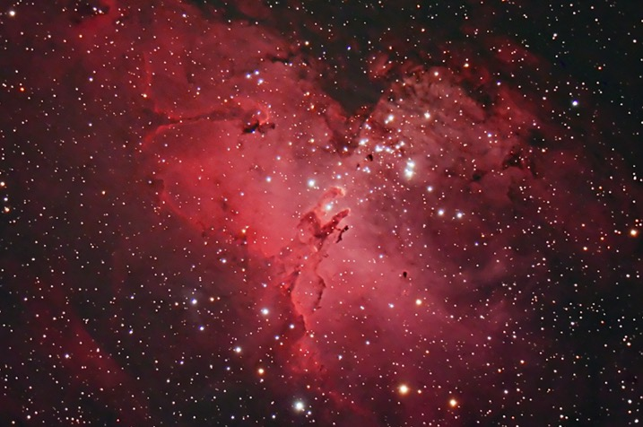
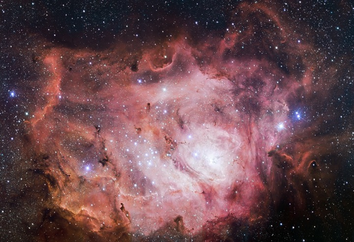
5.2.3 Cloud Collapse conditions
What conditions result in cloud collapse?
5.2.3.1 Virial Theorem
The Virial Theorem states that the total kinetic energy of a stable, self-gravitating mass distribution, is negative one half of the total gravitational potential energy \[ K.E. = -\frac{1}{2} P.E. \tag{5.16}\]
This helps us calculate the conditions that must exist for cloud collapse.
- For a cloud of mass \(M_c\), the number of particles with mass \(m_p\) in the cloud is \(N = M_c/m_p\)
- The potential energy of a spherical cloud with uniform density is given by Equation 5.13: \[ E_G = -\frac{3}{5}\frac{GM_c^2}{R_c}. \tag{5.17}\]
The cloud is a gas, and the kinetic energy of each particle in the gas is the thermal energy \(\frac{3}{2}k_B T\).
- The total K.E. is \[ E_K = \frac{3M_c}{2m_p}k_B T. \tag{5.18}\]
So the Virial Theorem tells us that for the cloud to be in equilibrium, the following equation must be valid
\[ \frac{3M_c}{2m_p}k_BT = -\frac{1}{2}\times \left(-\frac{3}{5}\frac{GM_c^2}{R_c}\right). \tag{5.19}\]
The cloud will collapse if the virial theorem is unbalanced, i.e. (\(E_k < -1/2 E_G\)): \[ \begin{aligned} \frac{3M_c}{2m_p}k_BT &< -\frac{1}{2}\times \left(-\frac{3}{5}\frac{GM_c^2}{R_c}\right) \\ \frac{k_BT}{m_p} &< \frac{1}{5} \frac{GM_c}{R_c}. \end{aligned} \tag{5.20}\]
5.2.3.2 Jeans mass
It follows that for a cloud of radius \(R_c\) at temperature \(T\), collapse will happen if \[ M_C > \frac{5k_BTR_c}{m_p G}. \tag{5.21}\]
If the cloud has initial density \(\rho_0 = \frac{M_c}{(4/3)\pi R_c^3},\) then \[ R_C = \left(\frac{3M_C}{4\pi\rho_0}\right)^{1/3} \tag{5.22}\] Substituting into previous expression for collapse we find \[ M_C > \frac{5k_BT}{m_p G}\left(\frac{3M_C}{4\pi\rho_0}\right)^{1/3}. \tag{5.23}\]
So, simplifying we find the necessary mass for a cloud to collapse is \[ M_C > \left(\frac{5k_B T}{m_P G}\right)^{3/2}\left(\frac{3}{4\pi\rho_0}\right)^{1/2}. \tag{5.24}\] This critical mass is called the Jeans Mass, \(M_J\). A cloud with \(M_C>M_J\) will collapse under gravity.
Using Equation 5.22, we can also find the Jeans length \[ R_J = \left(\frac{15 k_B T}{4\pi G m_p\rho_0}\right)^{1/2}. \tag{5.25}\] This is the minimum radius necessary for the cloud to collapse, so a cloud collapses if \(R_C>R_J\).
For a dense interstellar gas cloud we have \(\rho_0 = 1.67\times10^{-13}\,\mathrm{kg\,m^{-3}}\). If we assume an initial temperature \(T\approx 10 K\), then \(M_J \approx 6\times 10^{29}\,\mathrm{kg} \approx \frac{1}{2}M_\odot\).
- We can roughly predict the mass of a star!
- Real collapsing clouds fragment and have a range of temperatures and shapes so this is very rough.
Initially the collapse is essentially free-fall.
- The cloud can radiate away the liberated energy as the density is low
- Temperature remains fairly constant until the late stages.
5.2.3.3 Cloud collapse - temperature
Using the Virial theorem we can also predict the temperature of the cloud once it reaches equilibrium (the subscript \(*\) denotes the final state): \[ \begin{aligned} \frac{3}{2}k_BT_*\frac{M_*}{m_p} &= \frac{1}{2}\times\frac{3}{5}\times \frac{GM_*^2}{R_*} \\ T_* &= \frac{GM_*m_p}{5k_BR_*} \end{aligned} \tag{5.26}\]
For a \(1 M_\odot\) star with radius \(1 R_\odot\), and \(m_p=1.66\times 10^{-27}\,\mathrm{kg}\) we find \[ T_*\approx 4\times 10^6\,\mathrm{K}. \] Given the rather crude approximations this is not a bad estimate for the core temperature of the star.
For a large enough \(M_*/R_*\) ratio the temperature becomes high enough to fuse Hydrogen into Helium (and the protostar becomes a star). The heat released by fusion provides the energy needed to stabilise the cloud against further contraction.
5.3 Main sequence Stars
5.3.1 Nuclear fusion and p-p chain reaction
At the beginning of this chapter we have seen that fusing 4 Hydrogen nuclei into a Helium nucleus is a plausible mechanism for producing stellar energy (see Figure 5.1).
- We had assumed that all the star’s mass is available for fusion
- Collision of 4 H nuclei is incredibly unlikely
- Fusion is much more likely in a series of steps involving two-particle fusion
- This is called the p-p chain reaction.
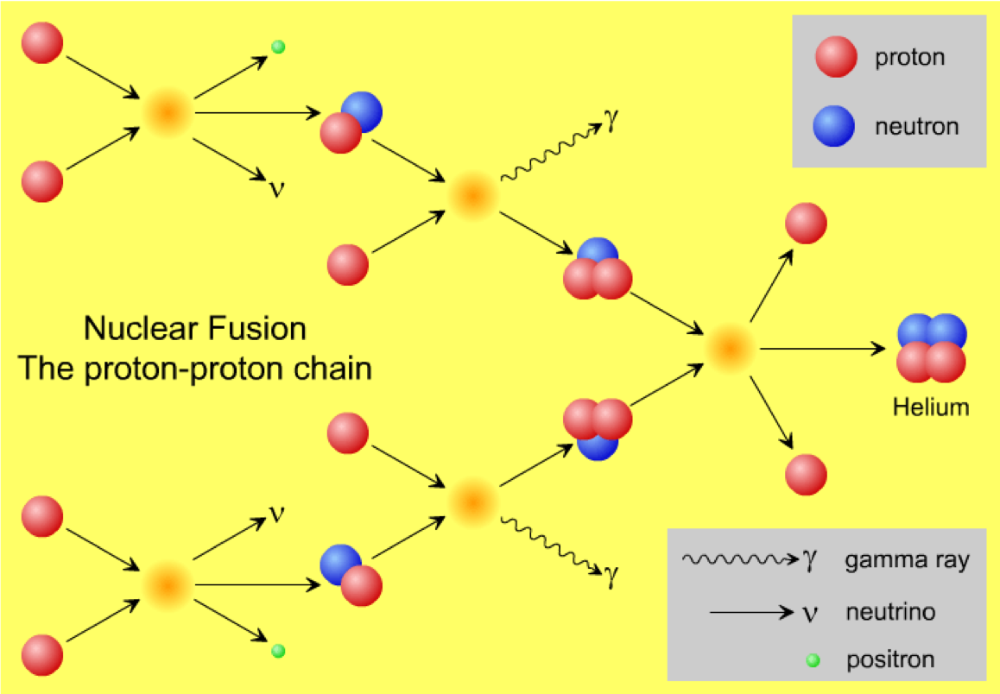
Two mass-1 isotopes of Hydrogen (protons) undergo a simultaneous fusion and beta decay, producing a positron, a neutrino and a mass-2 isotope of Hydrogen (deuterium) \[^1H +\ ^1H \rightarrow \beta^+ + \nu +\ ^2H\]
The deuterium reacts with another \(^1H\) to form Helium-3 and a gamma ray \[^1H+\ ^2H \rightarrow\ ^3He + \gamma\]
Two helium-3 isotopes produced in separate implementations of the first two stages fuse to form helium-4 plus two mass-1 hydrogen isotopes (protons) \[^3He + \ ^3He \rightarrow\ ^4He+2\ ^1H\]
So the net reaction is \[ 4\ ^1H \rightarrow \ ^4He + 2\beta^+ + 2\nu + 2\gamma\]
A small amount of energy is carried off by neutrinos
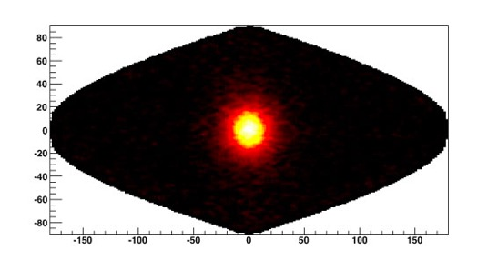
5.3.2 CNO cycle
- In stars \(\sim 1 M_\odot\), about 85% of nuclear reaction occur via the p-p chain.
- The other reactions are the temporary creation of heavier elements: \(^7Be\), \(^7Li\)
- In more massive stars the core temperature is higher \(>1.7 \times 10^7\,\mathrm{K}\) and other reactions are possible
- The dominant one is the CNO cycle (Figure 5.14)
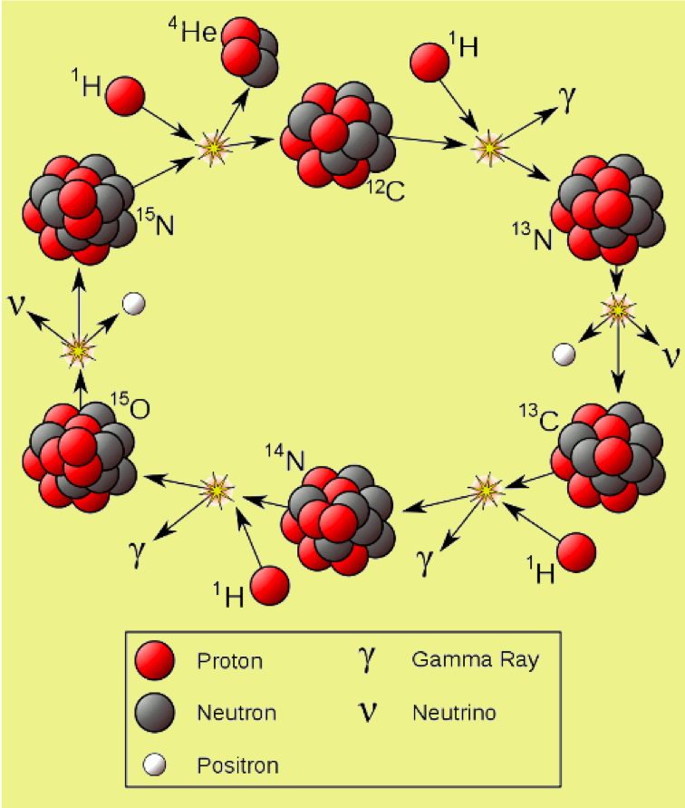
- Net reaction is \(4 ^1H \rightarrow ^4He + 3\gamma + 2\beta^+ + 2\nu\)
- Carbon is needed for this reaction to take place
- It acts as a catalyst but is not used up
- You don’t need to memorise this reaction!
5.3.2.1 Energy Creation Rates : pp-chain or CNO-cycle?
- The energy creation rates for the 2 chains depend strongly on temperature
- However, for the CNO-cycle to work at all, carbon, nitrogen and oxygen must be present
- this will depend on the star type
- At lower masses and, therefore, temperatures, the pp-chain dominates
- At higher temperatures, there is a sudden transition to dominance by the CNO-cycle
The energy production rate varies strongly with temperature for the CNO-cycle and so is more important for heavier stars – which have higher interior temperatures.
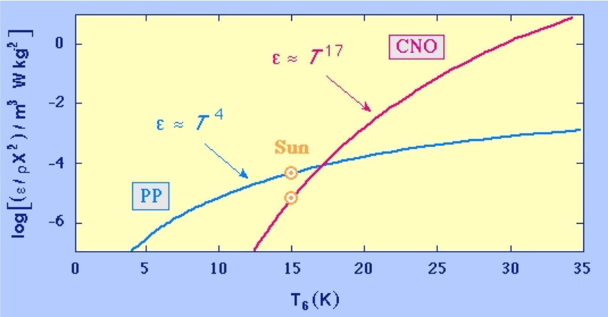
5.4 Stellar Structure
5.4.1 Modelling stars as gases
So far we have been talking about stars as being made up of gases.
- The mean density of a star is around 1.4 times that of water
- The central density in the core is about 150 times that of water.
Are we justified in using this model?
At high temperatures, Hydrogen is ionised into protons and electrons: these are tiny compared to Hydrogen atoms.
Let’s compare the density of Hydrogen atoms to protons.
- The equivalent mass density is obtained multiplying the atomic unit mass by the equivalent number density (inverse of the volume).
| Quantity | Hydrogen | Protons |
|---|---|---|
| Radius | \(\sim 10^{-10}\,\mathrm{m}\) | \(\sim 10^{-15}\,\mathrm{m}\) |
| Volume | \(\sim 10^{-30}\,\mathrm{m}^3\) | \(\sim 10^{-45}\,\mathrm{m}^3\) |
| Equivalent number density | \(\sim 10^{30}\,\mathrm{m}^{-3}\) | \(\sim 10^{45}\,\mathrm{m}^{-3}\) |
| Equivalent mass density | \(\sim 1.7\times 10^{3}\,\mathrm{kg\,m^{-3}}\) | \(\sim 1.7\times 10^{18}\,\mathrm{kg\,m^{-3}}\) |
In the photosphere, the density of hydrogen is only 0.0001 kg/m\(^3\)
The hydrogen is mostly un-ionised (see part 4 - stellar atmospheres)
Since the density of neutral hydrogen is much lower than the density of maximally packed hydrogen atoms (\(\approx 10^3\) kg/m\(^3\)), it behaves quite like an ideal gas.
In the interior, the temperature is so high that hydrogen is fully ionised
The density of protons at the core is \(\approx 1.5\times 10^5\,\mathrm{kg\,m^{-3}} \ll 10^{18}\,\mathrm{kg\,m^{-3}}\) (maximal density for protons)
We can think of it as a gas made up of a mixture of protons and electrons
5.4.2 Hydrostatic Equilibrium
In Chapter 2 we have a anticipated that inside a stable star, the inward pull of gravity is balanced by the thermal pressure due to the heat (Figure 2.24).
We can use this fact to develop a model of the stellar interior based on hydrostatic equilibrium.
This can help us work out what the central temperature and pressure is for a star.
- Consider a small slab of the star, surface area \(A\), thickness \(dr\) at a distance \(r\) from the centre (see Figure 5.16).
- \(M(r)\) is the mass inside radius \(r\)
- \(\rho(r)\) is the density at radius \(r\)
- The mass of the slab is then \(dm = A dr \rho\)
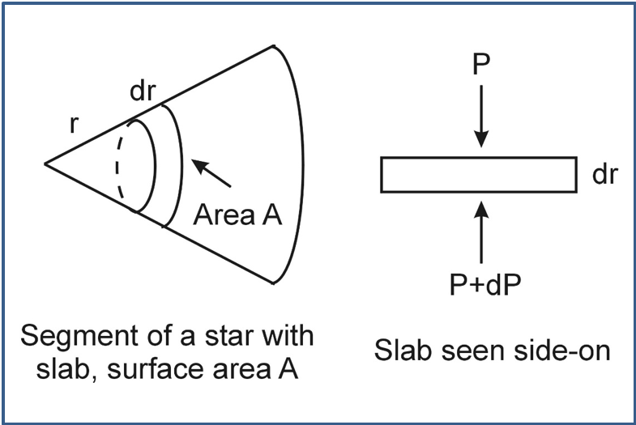
In equilibrium, the forces on each side of the slab are balanced.
One force acting on the slab is the force of gravity: \[ \begin{aligned} F_{grav} &= -\frac{GM(r)dm}{r^2}\\ &=-\frac{GM(r)\rho(r)A dr}{r^2}. \end{aligned} \tag{5.27}\]
This is balanced by the extra pressure from the gas below, which is \(F_{pressure}=AdP\).
The slab does not move, so the two are balanced: \[ \begin{aligned} F_{pressure}&=F_{grav}\\ AdP&=-\frac{GM(r)\rho(r)Adr}{r^2}, \end{aligned} \tag{5.28}\] resulting in \[ \frac{dP}{dr}=-\frac{GM(r)\rho(r)}{r^2}. \tag{5.29}\]
This is the equation of hydrostatic equilibrium.
5.4.2.1 Solving the equation of hydrostatic equilibrium
We can solve this differential equation to find the pressure a function of radius, \(P(r)\).
We need to know \(M(r)\) and \(\rho(r)\) to solve the equation.
Note the negative sign: the pressure decreases toward the outside of the star (as expected)
For simplicity we can assume the star has uniform density: \(\rho_{av}\).
Then the mass inside a radius \(r\) is \(M(r)=\frac{4}{3}\pi r^3\rho_{av}\).
Inserting this into the equation of hydrostatic equilibrium gives us: \[ \frac{dP}{dr} = -\frac{GM(r)\rho(r)}{r^2} = -\frac{4}{3}\pi G\rho_{av}^2 r. \tag{5.30}\]
Starting with Equation 5.30, we need to use boundary conditions to solve this:
- At the surface of the star the pressure drops to 0, so \(P(R)=0\), where \(R\) is the radius of the star.
- At the centre, \(r=0\), let the pressure be \(P_0\)
Solve the equation by integrating both sides \[ \begin{aligned} \int_{P_0}^0 dP &= -\frac{4}{3}\pi G\rho_{av}^2 \int_0^R r dr \\ \left[P\right]^0_{P_0} &= -\frac{4}{3}\pi G\rho_{av}^2\left[\frac{r^2}{2}\right]_0^R \\ 0 - P_0 &= -\frac{4}{6}\pi G\rho_{av}^2 \left[R^2-0\right] \\ P_0 &= \frac{2}{3}\pi G\rho_{av}^2 R^2. \end{aligned} \tag{5.31}\] This is the formula of the central pressure.
5.4.3 Central pressure of the Sun
5.4.3.1 Question
Find the central pressure in the Sun, knowing that \(\rho_{av}=\frac{M_\odot}{\frac{4}{3}\pi R^3}=1409\,\mathrm{kg\,m}^{-3}\).
Solution
Our result of Equation 8.3 can be applied to find the central pressure in the Sun.
Using \(R_\odot=6.957\times10^{8}\,\mathrm{m}\), we find
\[P_0 = 1.3\times 10^{14}\,\mathrm{N\,m}^{-2}\]
About a billion times the air pressure in the room!5.4.3.2 More accurate estimate
For the estimation above we used results obtained under the assumption of uniform density. A better model would allow the density to increase toward the centre.
- They predict:
- \(P_0 \approx 10^{16}\,\mathrm{N\,m}^{-2}\)
- \(\rho_0 \approx 10^5\,\mathrm{kg\,m}^{-3}\)
- This density is about 10 times the density of lead.
5.4.4 Central temperature in the Sun
We can use the ideal gas law: \(PV=nRT\).
- \(P\): Pressure
- \(V\): Volume
- \(n\): number of moles of the gas
- \(R=N_A k_B\) is the ideal gas constant
- \(N_A=6.02\times 10^{23}\,\mathrm{mol}^{-1}\) is Avogadro’s constant
Re-write this as \[ P=\frac{nN_Ak_BT}{V} = \frac{M}{V}\frac{k_BT}{\mu}, \tag{5.32}\]
where \(\mu\) is the mean molecular weight of the atoms.
- Since we are talking about Hydrogen, \(\mu=m_p\) the proton mass
- \(\rho = \frac{M}{V} = \frac{\mu n N_A}{V}\) is the density.
This gives us \[ P=\frac{M}{V}\frac{k_BT}{\mu} = \rho_{av}\frac{k_B T}{\mu}. \tag{5.33}\]
Rearrange to find the central temperature \[ T_0 = \frac{\mu P_0}{k_B\rho_{av}} \approx 10^7\,\mathrm{K} \tag{5.34}\] While we assumed constant density here, it turns out that more sophisticated models give approximately the same answer.
5.4.5 Stellar structure - more realistic models and energy transport
More realistic models allow for temperature, pressure and density gradients inside the star.
Energy can be transported by three mechanisms:
Radiation - in the center of the stars photons carry energy away
Convection - circular motion of gas due to temperature gradient: hot gas moves up, cooler gas moves down
Conduction - collisions between electrons can move energy outwards
When the temperature gradient is too high, pressure at the bottom of a slab is greater than required to balance gravity
The slab will experience a net outward force
Convection can occur instead of simple energy transport by radiation (Figure 5.17).
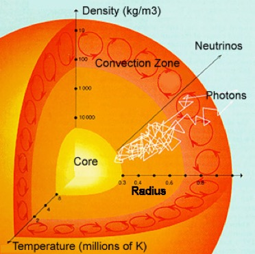
- In stars like the Sun, photons scatter off nuclei or electrons every other millimetre or so
- It takes them about 50,000 years to escape the Sun
Photons carry energy away and are also the byproduct of nuclear fusion as well as neutrinos. While travelling toward the outer part of the star, photons are constantly being absorbed and re-emitted by atoms. They “random walk” their way out of a star.
- Hydrogen is converted to Helium in the core
- Very little Helium escapes
- Both radiation and convection transport heat energy from the core to the surface
How efficient radiative transport is then depends on the absorbing power of the medium (called opacity).
- If the medium absorbs a lot of photons, then the radiative transport is low and photons can’t travel quickly and far.
Whether radiative or convection mechanism dominate depends on the mass, temperature and structure of the stars.
- Opacity is the capacity of absorbing photons to ionize or excite atoms.
- In low mass stars, like the Sun, the outer envelope temperature is not high enough and hydrogen is not ionized. Soigher energy photons coming from the interior of the star are easily absorbed by the hydrogen - the outer portions of low mass stars have high opacity, and are thus convective.
- In high mass stars, the temperature is high enough that the hydrogen stays ionized in the outer part, so radiation is not so easily absorbed - the outer layer of high mass stars is radiative.
- The nuclear fusion mechanism in high mass stars is mainly CNO cycle, which has a strong temperature dependance, so it is too strong for radiative transport - the core of high mass stars is convective.
Figure 5.18 shows different energy transport mechanisms taking place inside stars of different masses.
- Stars of mass similar to the one of the Sun have a central bulk where energy is radiated, while the outer layer is a convection zone
- Stars with \(M>1.5M_\odot\) are convective in their centers because the CNO cycle is more dependent on the temperature as compared to the pp chain
- Stars with mass \(<0.5 M_\odot\) are not hot enough to trigger nuclear fusion, so their energy transport mechanism is mainly convective.
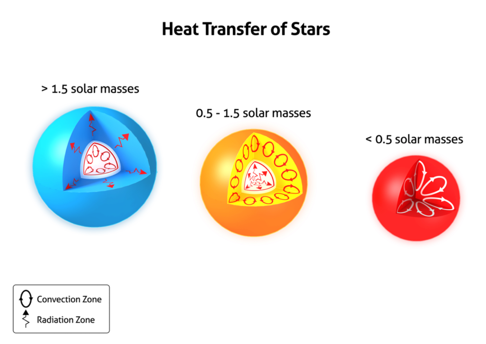
## Recap
- Stars like the Sun are mainly powered by nuclear fusion (for \(M>0.08 M_\odot\))
- The main nuclear fusion mechanisms are p-p and CNO cycles
- Protostars are formed when a ISM cloud collapses, spinning and attracting more surrounding material, while slowly getting hotter
- When the protostar is hot enough, nuclear fusion of hydrogen begins and the protostar becomes a star
- The liberation of gravitational energy from the collapse, converted to heat and powering the star, is regulated by the Kelvin-Helmoltz timescale
- Pre-main-sequence stars move on the HR diagram following Hayashi and Henyey tracks
- The virial theorem states that for a stable self-gravitating mass, the kinetic energy is half the gravitational potential energy (remember the minus sign)
- An ISM cloud collapses if its mass is larger than the Jeans mass
- The interior of stars can transport energy by radiative transport and convection.